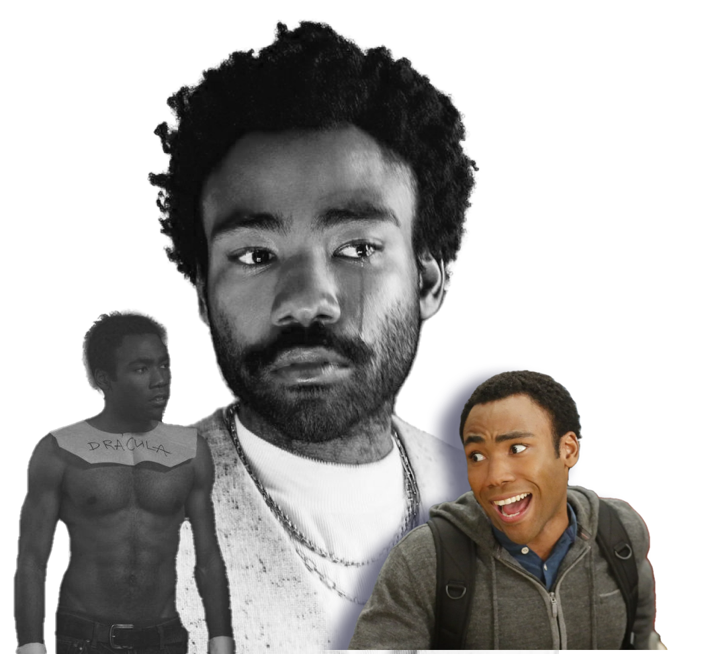
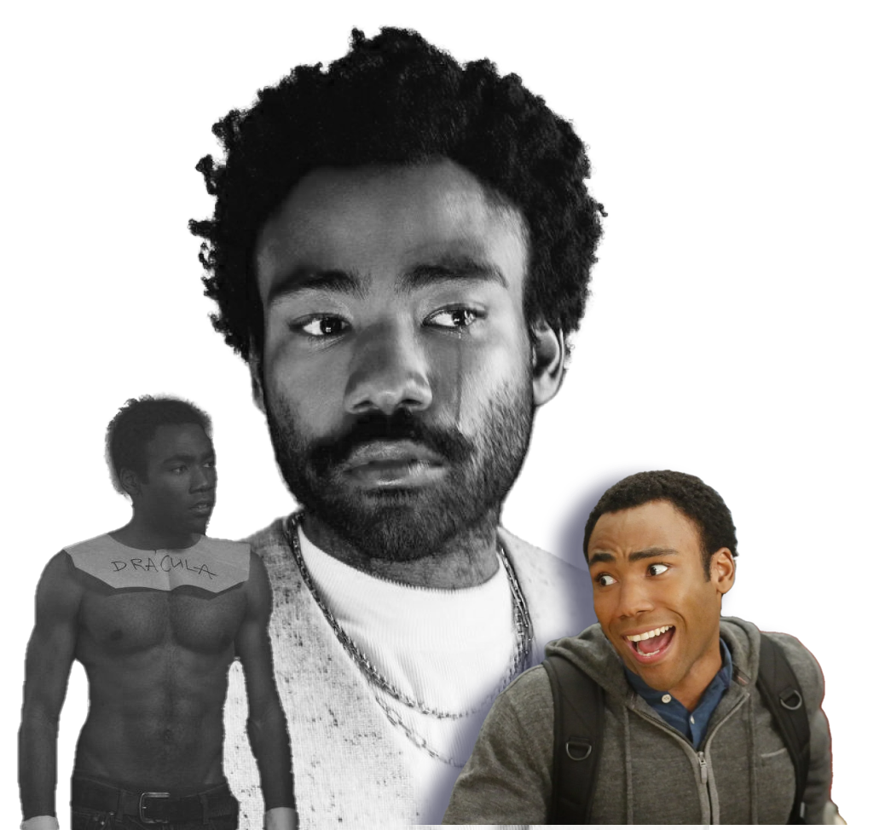
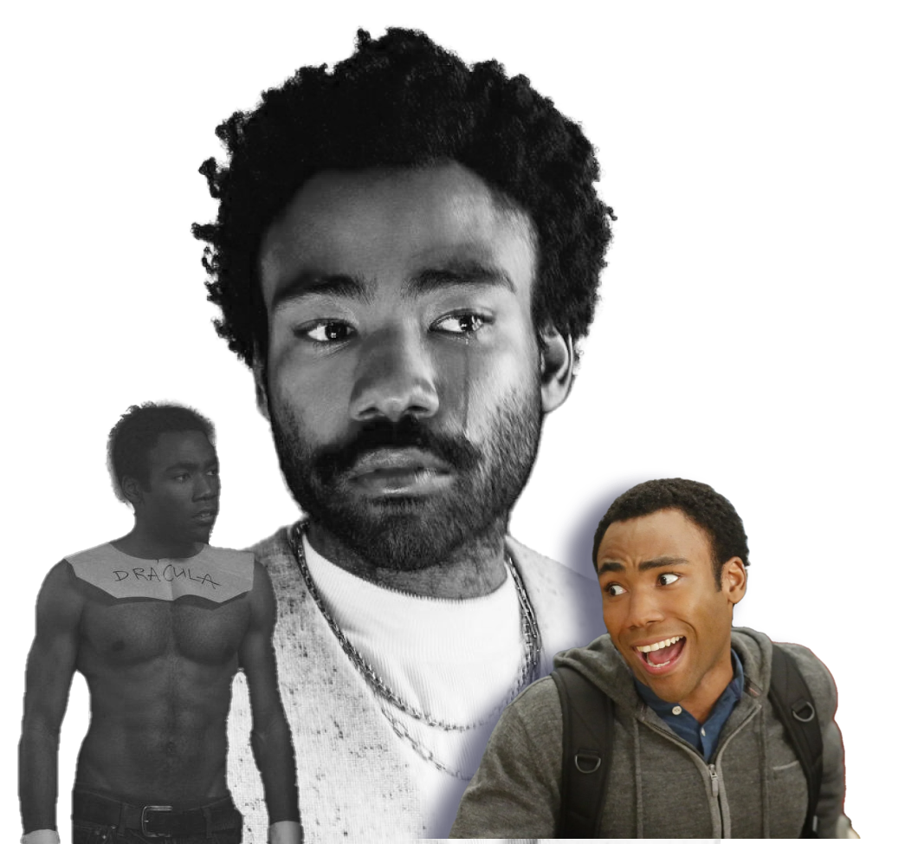

Donald Glover, also known by his stage name "Childish Gambino," is an American actor, writer, producer,
director, comedian, rapper, singer, and songwriter.
He was born on September 25, 1983, in California, United States. He graduated from New York University
with a degree in dramatic writing.
He began his career as a writer for the hit television series "30 Rock" and then as an actor on the
comedy series "Community."
The Actor
The Actor

Donald Glover has been making music under the stage name "Childish Gambino" since 2008. He released his
debut album, "Sick Boi," in 2008 and has since released several more albums, including "Camp" (2011),
"Because the Internet" (2013), "Awaken, My Love!" (2016), and "3.15.20" (2020). Glover's music is known
for its unique blend of hip-hop, funk, and soul, and he often incorporates personal and introspective
lyrics into his songs. His music has been praised for its creativity and authenticity, and he has been
compared to other boundary-pushing artists such as Kanye West and Kendrick Lamar. In addition to his
work as a musician, Glover has also directed several music videos for his own songs, as well as for
other artists such as SZA and Chance the Rapper.
Overall, Glover's career as a musician is characterized by his willingness to take creative risks and
push the boundaries of what is expected in both hip-hop and popular music more broadly.
The Musician
The Musician
Donald Glover has been making music under the stage name "Childish Gambino" since 2008. He released his
debut album, "Sick Boi," in 2008 and has since released several more albums, including "Camp" (2011),
"Because the Internet" (2013), "Awaken, My Love!" (2016), and "3.15.20" (2020). Glover's music is known
for its unique blend of hip-hop, funk, and soul, and he often incorporates personal and introspective
lyrics into his songs. His music has been praised for its creativity and authenticity, and he has been
compared to other boundary-pushing artists such as Kanye West and Kendrick Lamar. In addition to his
work as a musician, Glover has also directed several music videos for his own songs, as well as for
other artists such as SZA and Chance the Rapper.
Overall, Glover's career as a musician is characterized by his willingness to take creative risks and
push the boundaries of what is expected in both hip-hop and popular music more broadly.
The Director
The Director
Donald Glover has also had a successful career as a director, having directed several critically
acclaimed music videos, television episodes, and films. One of his earliest directorial credits was for
the music video for his song "Sweatpants," which was released in 2014. He has since directed several
more music videos for his own songs, including "This Is America," "Feels Like Summer," and "3005."
Glover's most notable directorial work in television has been for his own show "Atlanta," which he
created and stars in. He has directed several episodes of the series and has been praised for his unique
visual style and ability to balance humor and social commentary.
Glover's directorial work in film includes the 2018 movie "Guava Island," which he directed and starred
in alongside Rihanna. The film was released on Amazon Prime and received positive reviews for its
vibrant cinematography and musical performances.
Overall, Donald Glover's career as a director is characterized by his ability to bring his unique
artistic vision to a variety of mediums, from music videos to television and film. He has shown a
willingness to take creative risks and push boundaries in his work, resulting in some of the most
exciting and innovative entertainment of recent years.
 
